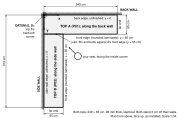
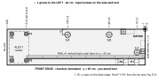
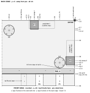
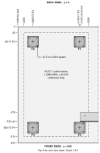
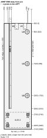
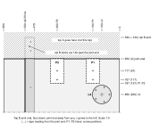
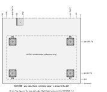
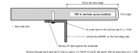
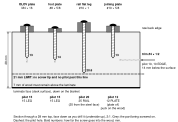
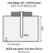

This chapter marks both tops face down and labels the two rails. Nothing is fixed yet. Positions are in cm, as the tape reads them; thicknesses, holes and screws in mm. Every position is measured from one datum: top A's back-left corner. x runs along the back wall, y along the side wall. Top A covers x 0–249 cm, y 0–65 cm; top B covers x 0–65 cm, y 65–314 cm.

Each top has one rounded, laminated long edge: the front. The other long edge is square and unfinished: it goes against the wall. Either short end can become the side-wall end.
The two tops (P01, P02) are identical. A is the one you lay along the back wall; its unfinished edge is y = 0. B lies along the side wall; its unfinished edge is x = 0 and one short end, the joint end, butts against A's front edge. Top B is top A turned 90°, never mirrored.

| Mark | Hook the tape on | Tape reads (cm) | Then |
|---|---|---|---|
| L1 | the back edge, tape along the side-wall end | 42 | leg jig, 150 pattern, lip over the side-wall end. Plate ends 6.5 mm short of rail A |
| L2 | the side-wall end, tape along the back edge | 65 | leg jig, 100 pattern, lip over the back edge |
| L3 | the side-wall end, tape along the back edge | 140 | leg jig, 100 pattern, lip over the back edge |
| F1 | the far end, tape along the back edge | 34.5 | T-square, lip over the back edge, hole 85 on the tick, its four plate holes |
| F3 | the far end, tape along the front edge | 34.5 | T-square, lip over the front (rounded) edge, hole 85 on the tick, its four plate holes |
| F2, F4 | no tape: feet corner jig on the far back and far front corners | 8.5 cm in from both edges | |
| Rail A line | the back edge, at both ends of the line and the middle | 53 | line from 1 to 214 on the side-wall-end tape; the vertical leg's outer face goes on it (12 cm from the front edge) |
| C1 | the side-wall end, along the back edge | 36 to 44 | keep clear, 9 cm in from the back edge |
| C2 | the back edge, along the side-wall end | 36 to 44 | keep clear, 9 cm in from the side-wall end |
| Pad plate 1 | the side-wall end, along the back edge | 20.0 to 45.4 | outline only, 0.5 to 8.1 cm in from the back edge |
| Pad plate 2 | the back edge, along the side-wall end | 20.0 to 45.4 | outline only, 0.5 to 8.1 cm in from the side-wall end |
| P1 / P2 | the side-wall end, along the front edge | 11.2–18.8 / 31.2–38.8 | outline only, from 53.3 cm (back-edge tape) to the front edge; screwed in chapter H |
All positions SOURCE-DEFINED (design positions). Pilots: 1/8 in, started 3–4 mm through the jig; they are finished to depth when the legs and feet go on in chapter F.


Feet plate: 59.5 mm square, four ⌀5.2 mm holes 46.8 mm apart VERIFIED. Plates square with the top's edges.
The ALEX 1 outline is for orientation only; nothing is marked for it.

| Mark | Tape reads (cm), hooked on the joint end unless marked | Then |
|---|---|---|
| L4 | 20 | along the side-wall edge; leg jig, 100 pattern, lip over the side-wall edge |
| L5 | 95 | |
| L6 | 170 | |
| F5 | far end: 34.5 | tape hooked on the far end, along the side-wall edge; T-square hole 85 on the tick, lip over the side-wall edge |
| F6 | far end: 34.5 | tape hooked on the far end, along the front edge; T-square hole 85 on the tick, lip over the front edge |
| F7, F8 | no tape | feet corner jig on the two far corners |
| Rail B line | 0 to 201 | at 53 cm from the side-wall edge (12 cm from the front edge); the vertical leg's outer face goes on it; the rail's corner end sticks out 12 cm past the joint end |
| P1 / P2 | 0 to 13.7 | outline only, 11.2–18.8 / 31.2–38.8 cm from the side-wall edge; screws in chapter H at 6.7 and 11.7 cm |
All positions SOURCE-DEFINED (design positions). L4–L6 have one pilot pointing at the side wall, like L2 and L3.



The printed rail end caps are handed: cap A fits rail A's far end (print 1); cap B fits rail A's wall end and rail B's far end (print 2); rail B's corner end is bolted to rail A and takes no cap.
| Fastener | Qty | Goes through | Into the wood (mm) | Pilot | Puck |
|---|---|---|---|---|---|
| H01 · M4 × 16 (with the OLOV) | 30 | leg plate, about 3 mm | 13 | 1/8 in, 15 mm deep | 15 LEG |
| H02 · #8 × 5/8 in pan head | 32 | feet plate, about 1.5–2 mm | 14 | 1/8 in, 15 mm deep | 15 LEG |
| H03 · #10 × 1 in pan head, Robertson | 19 | 4.8 mm angle | 20.6 | 1/8 in: the 25 RAIL puck stands on the steel and stops the bit 20 mm into the wood | 25 RAIL |
| H04 + H05 · #10 × 5/8 in with washer | 8 | 3 mm joining plate | 13 | 1/8 in, 12 mm deep, plate OFF, puck standing on the wood | 12 PLATE |
| H06 · #6 × 5/8 in flat head | 24 | 2.5 mm ring flange | 13.4, into the 15.9 mm ALEX top | 5/64 in, 12 mm deep | 12 ALEX |
| H07 · #4 × 1/2 in flat head (optional trim) | 48 | trim lip | sideways into the raw back edge, 14 mm below the surface | 5/64 in, 10 mm deep | 10 EDGE |
| H08 + H09 + H10 · 3/8-16 bolts | 6 | fittings and rail vertical legs | none | 7/16 in, bench-drilled | — |
Depths SOURCE-DEFINED (guide.html fastener table, facts.json). The bolt holes and the 7/32 in screw holes in the steel are drilled on the bench (chapter E); everything into wood goes through a jig first and is finished with its puck.


If your chuck nose is domed, drill one test hole in scrap and measure it first.
Next: chapter E (steel on the bench), then chapter F (legs, feet and rails onto the tops).